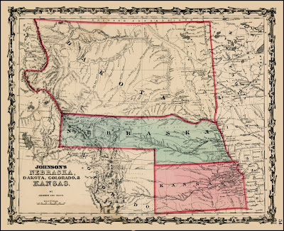
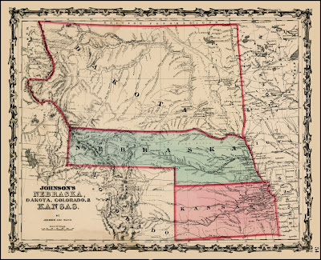
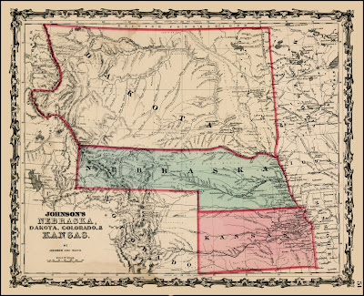
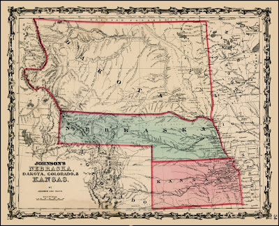

 

In October of 1866 between in what would the time had been the Wyoming Territory, two men by the name of M.S. Stickney and George W. Black had shot and killed a man named Bicking who was traveling with them to Salt Lake City. Both men were implicated and charged with murder in early 1867 in Chicago. The circumstances of the murder are relatively unkown with the available information. From the sources themselves and newspaper articles from March 1867, what can be compiled is a seemingly chance series of events. Black and Stickney had been traveling together for sometime West towards Salt Lake City when they met Bicking. All three men decided to travel together, and with them a team of mules, whose original owner is unknown. After setting up camp for the night in the Dakota Territory, the mules had escaped. Bicking had split off from the group to look in the opposite direction of Stickney and Bicking. Stickney's testimony of the following events has not been found, but Black states that Stickney saw Bicking from approximately 200 yards away pulling out his pistol and pointing it at the the other two men and told Black to shoot him first. Black admited to killing Bicking but maintained that Stickney had coerced him and he believed he was defending himself. One article states that "Stickney held ill will toward Bicking", which leaves many question about possible motive and was not confirmed by either of the other known sources. In February 1867, both Stickney and Black were brought into custody in Chicago to await trial. Although they were released at the end of that month, later in March Black at least was rearrested at the command of the State Attorney's Office.
All of the letters in the collection are addressed to Judge W. A. Carter. Judge William A. Carter was born in 1818 in Virginia. In 1857 he moved to Fort Bridger primarily to become a trader. Carter had a reputation as a highly influential and wealthy business man while also being the Probate Judge for Fort Bridger at the time of the Bicking Murder. None of the replies from Judge Carter are present in the collection, leaving a large gap in information about the proceedings of the prosecution during the trial, if a trial was held at all. Interestingly, both Black and State Attorney Henry Stanebery inquire to Judge Carter for help for both the prosecutioin and the defense. Carter's previous relationship with either party is unknown, though Black does address him as "friend" in his letters.
A variety of details are still unknown concerning the case. Bickings first name, the true circumstances of the incident, what happened to Bicking's remains, if there was a trial as all and if so what was the outcome, why all three men decided to travel together in the first place, if Judge Carter was a character witness for Black or not, and if both Stickney and Black were charged formally. It is fairly certain however to say that Carter did cooperate with the State Attorney's office.
One of the letters was written by American literary giant Walt Whitman during his time as a scribe for the Attorney General's Office in the 1860s. Beyond copying the letter and addressing the envelope, there is no indication that he addeed, revised, or was involved in any other way with the documents.
The intentions of this project and website are to shed light and archive the collection of correspondence concerning the 1866 murder of a peddler named Bicking. These documents were purchased by Dr. Kenneth Price at the University of Nebraska-Lincoln on eBay as a set. The set contains correspondence from the Attorney General Henry Stanbery, Judge William A. Carter, the wife of the victim A.E. Bicking, and George W. Black. Walt Whitman worked for the Attorney General's office at the time and scribed at least one of these documents. Editorial discretion was given to misspellings, alternate spellings, and abbreviations. Editorial notes are intended to give context to the information of each of the letters to the best of ability. Hannah Cahill & Victoria Fultz
{kind=link}
{kind=link}
{kind=link}